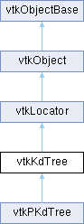

|
Etrek
|
|
Etrek
|
a Kd-tree spatial decomposition of a set of points More...
#include <vtkKdTree.h>

Classes | |
| struct | cellList_ |
Public Member Functions | |
| vtkTypeMacro (vtkKdTree, vtkLocator) | |
| void | PrintSelf (ostream &os, vtkIndent indent) override |
| vtkGetMacro (NumberOfRegionsOrLess, int) | |
| vtkSetMacro (NumberOfRegionsOrLess, int) | |
| vtkGetMacro (NumberOfRegionsOrMore, int) | |
| vtkSetMacro (NumberOfRegionsOrMore, int) | |
| vtkGetMacro (FudgeFactor, double) | |
| vtkSetMacro (FudgeFactor, double) | |
| vtkGetObjectMacro (Cuts, vtkBSPCuts) | |
| void | SetCuts (vtkBSPCuts *cuts) |
| void | OmitXPartitioning () |
| void | OmitYPartitioning () |
| void | OmitZPartitioning () |
| void | OmitXYPartitioning () |
| void | OmitYZPartitioning () |
| void | OmitZXPartitioning () |
| void | OmitNoPartitioning () |
| void | SetDataSet (vtkDataSet *set) override |
| virtual void | AddDataSet (vtkDataSet *set) |
| int | GetNumberOfDataSets () |
| vtkDataSet * | GetDataSet (int n) |
| vtkDataSet * | GetDataSet () override |
| int | GetDataSetIndex (vtkDataSet *set) |
| void | GetBounds (double *bounds) |
| void | SetNewBounds (double *bounds) |
| void | GetRegionBounds (int regionID, double bounds[6]) |
| void | GetRegionDataBounds (int regionID, double bounds[6]) |
| void | PrintRegion (int id) |
| void | CreateCellLists (int dataSetIndex, int *regionReqList, int reqListSize) |
| void | CreateCellLists (vtkDataSet *set, int *regionReqList, int reqListSize) |
| void | CreateCellLists (int *regionReqList, int listSize) |
| void | CreateCellLists () |
| void | DeleteCellLists () |
| vtkIdList * | GetCellList (int regionID) |
| vtkIdList * | GetBoundaryCellList (int regionID) |
| int * | AllGetRegionContainingCell () |
| int | GetRegionContainingPoint (double x, double y, double z) |
| void | BuildLocator () override |
| void | ForceBuildLocator () override |
| int | MinimalNumberOfConvexSubRegions (vtkIntArray *regionIdList, double **convexRegionBounds) |
| int | ViewOrderAllRegionsInDirection (const double directionOfProjection[3], vtkIntArray *orderedList) |
| int | ViewOrderRegionsInDirection (vtkIntArray *regionIds, const double directionOfProjection[3], vtkIntArray *orderedList) |
| int | ViewOrderAllRegionsFromPosition (const double directionOfProjection[3], vtkIntArray *orderedList) |
| int | ViewOrderRegionsFromPosition (vtkIntArray *regionIds, const double directionOfProjection[3], vtkIntArray *orderedList) |
| vtkIdTypeArray * | BuildMapForDuplicatePoints (float tolerance) |
| vtkIdType | FindClosestPointWithinRadius (double radius, const double x[3], double &dist2) |
| void | FindPointsWithinRadius (double R, const double x[3], vtkIdList *result) |
| void | FindClosestNPoints (int N, const double x[3], vtkIdList *result) |
| vtkIdTypeArray * | GetPointsInRegion (int regionId) |
| void | FreeSearchStructure () override |
| void | GenerateRepresentation (int level, vtkPolyData *pd) override |
| void | GenerateRepresentation (int *regionList, int len, vtkPolyData *pd) |
| virtual void | PrintTiming (ostream &os, vtkIndent indent) |
| virtual int | NewGeometry () |
| virtual int | NewGeometry (vtkDataSet **sets, int numDataSets) |
| virtual void | InvalidateGeometry () |
| void | FindPointsInArea (double *area, vtkIdTypeArray *ids, bool clearArray=true) |
| vtkBooleanMacro (Timing, vtkTypeBool) | |
| vtkSetMacro (Timing, vtkTypeBool) | |
| vtkGetMacro (Timing, vtkTypeBool) | |
| vtkSetMacro (MinCells, int) | |
| vtkGetMacro (MinCells, int) | |
| virtual void | RemoveDataSet (int index) |
| virtual void | RemoveDataSet (vtkDataSet *set) |
| virtual void | RemoveAllDataSets () |
| vtkGetObjectMacro (DataSets, vtkDataSetCollection) | |
| vtkGetMacro (NumberOfRegions, int) | |
| void | PrintTree () |
| void | PrintVerboseTree () |
| vtkSetMacro (IncludeRegionBoundaryCells, vtkTypeBool) | |
| vtkGetMacro (IncludeRegionBoundaryCells, vtkTypeBool) | |
| vtkBooleanMacro (IncludeRegionBoundaryCells, vtkTypeBool) | |
| vtkIdType | GetCellLists (vtkIntArray *regions, int set, vtkIdList *inRegionCells, vtkIdList *onBoundaryCells) |
| vtkIdType | GetCellLists (vtkIntArray *regions, vtkDataSet *set, vtkIdList *inRegionCells, vtkIdList *onBoundaryCells) |
| vtkIdType | GetCellLists (vtkIntArray *regions, vtkIdList *inRegionCells, vtkIdList *onBoundaryCells) |
| int | GetRegionContainingCell (vtkDataSet *set, vtkIdType cellID) |
| int | GetRegionContainingCell (int set, vtkIdType cellID) |
| int | GetRegionContainingCell (vtkIdType cellID) |
| void | BuildLocatorFromPoints (vtkPointSet *pointset) |
| void | BuildLocatorFromPoints (vtkPoints *ptArray) |
| void | BuildLocatorFromPoints (vtkPoints **ptArray, int numPtArrays) |
| vtkIdType | FindPoint (double *x) |
| vtkIdType | FindPoint (double x, double y, double z) |
| vtkIdType | FindClosestPoint (double *x, double &dist2) |
| vtkIdType | FindClosestPoint (double x, double y, double z, double &dist2) |
| vtkIdType | FindClosestPointInRegion (int regionId, double *x, double &dist2) |
| vtkIdType | FindClosestPointInRegion (int regionId, double x, double y, double z, double &dist2) |
| vtkBooleanMacro (GenerateRepresentationUsingDataBounds, vtkTypeBool) | |
| vtkSetMacro (GenerateRepresentationUsingDataBounds, vtkTypeBool) | |
| vtkGetMacro (GenerateRepresentationUsingDataBounds, vtkTypeBool) | |
| Public Member Functions inherited from vtkLocator | |
| virtual void | Update () |
| virtual void | Initialize () |
| vtkTypeMacro (vtkLocator, vtkObject) | |
| void | PrintSelf (ostream &os, vtkIndent indent) override |
| vtkGetObjectMacro (DataSet, vtkDataSet) | |
| vtkSetClampMacro (MaxLevel, int, 0, VTK_INT_MAX) | |
| vtkGetMacro (MaxLevel, int) | |
| vtkGetMacro (Level, int) | |
| vtkSetMacro (Automatic, vtkTypeBool) | |
| vtkGetMacro (Automatic, vtkTypeBool) | |
| vtkBooleanMacro (Automatic, vtkTypeBool) | |
| vtkSetClampMacro (Tolerance, double, 0.0, VTK_DOUBLE_MAX) | |
| vtkGetMacro (Tolerance, double) | |
| vtkSetMacro (UseExistingSearchStructure, vtkTypeBool) | |
| vtkGetMacro (UseExistingSearchStructure, vtkTypeBool) | |
| vtkBooleanMacro (UseExistingSearchStructure, vtkTypeBool) | |
| vtkGetMacro (BuildTime, vtkMTimeType) | |
| bool | UsesGarbageCollector () const override |
| Public Member Functions inherited from vtkObject | |
| vtkBaseTypeMacro (vtkObject, vtkObjectBase) | |
| virtual void | DebugOn () |
| virtual void | DebugOff () |
| bool | GetDebug () |
| void | SetDebug (bool debugFlag) |
| virtual void | Modified () |
| virtual vtkMTimeType | GetMTime () |
| void | PrintSelf (ostream &os, vtkIndent indent) override |
| void | RemoveObserver (unsigned long tag) |
| void | RemoveObservers (unsigned long event) |
| void | RemoveObservers (const char *event) |
| void | RemoveAllObservers () |
| vtkTypeBool | HasObserver (unsigned long event) |
| vtkTypeBool | HasObserver (const char *event) |
| vtkTypeBool | InvokeEvent (unsigned long event) |
| vtkTypeBool | InvokeEvent (const char *event) |
| std::string | GetObjectDescription () const override |
| unsigned long | AddObserver (unsigned long event, vtkCommand *, float priority=0.0f) |
| unsigned long | AddObserver (const char *event, vtkCommand *, float priority=0.0f) |
| vtkCommand * | GetCommand (unsigned long tag) |
| void | RemoveObserver (vtkCommand *) |
| void | RemoveObservers (unsigned long event, vtkCommand *) |
| void | RemoveObservers (const char *event, vtkCommand *) |
| vtkTypeBool | HasObserver (unsigned long event, vtkCommand *) |
| vtkTypeBool | HasObserver (const char *event, vtkCommand *) |
| template<class U, class T> | |
| unsigned long | AddObserver (unsigned long event, U observer, void(T::*callback)(), float priority=0.0f) |
| template<class U, class T> | |
| unsigned long | AddObserver (unsigned long event, U observer, void(T::*callback)(vtkObject *, unsigned long, void *), float priority=0.0f) |
| template<class U, class T> | |
| unsigned long | AddObserver (unsigned long event, U observer, bool(T::*callback)(vtkObject *, unsigned long, void *), float priority=0.0f) |
| vtkTypeBool | InvokeEvent (unsigned long event, void *callData) |
| vtkTypeBool | InvokeEvent (const char *event, void *callData) |
| virtual void | SetObjectName (const std::string &objectName) |
| virtual std::string | GetObjectName () const |
| Public Member Functions inherited from vtkObjectBase | |
| const char * | GetClassName () const |
| virtual vtkTypeBool | IsA (const char *name) |
| virtual vtkIdType | GetNumberOfGenerationsFromBase (const char *name) |
| virtual void | Delete () |
| virtual void | FastDelete () |
| void | InitializeObjectBase () |
| void | Print (ostream &os) |
| void | Register (vtkObjectBase *o) |
| virtual void | UnRegister (vtkObjectBase *o) |
| int | GetReferenceCount () |
| void | SetReferenceCount (int) |
| bool | GetIsInMemkind () const |
| virtual void | PrintHeader (ostream &os, vtkIndent indent) |
| virtual void | PrintTrailer (ostream &os, vtkIndent indent) |
Static Public Member Functions | |
| static vtkKdTree * | New () |
| static vtkKdNode * | CopyTree (vtkKdNode *kd) |
| Static Public Member Functions inherited from vtkObject | |
| static vtkObject * | New () |
| static void | BreakOnError () |
| static void | SetGlobalWarningDisplay (vtkTypeBool val) |
| static void | GlobalWarningDisplayOn () |
| static void | GlobalWarningDisplayOff () |
| static vtkTypeBool | GetGlobalWarningDisplay () |
| Static Public Member Functions inherited from vtkObjectBase | |
| static vtkTypeBool | IsTypeOf (const char *name) |
| static vtkIdType | GetNumberOfGenerationsFromBaseType (const char *name) |
| static vtkObjectBase * | New () |
| static void | SetMemkindDirectory (const char *directoryname) |
| static bool | GetUsingMemkind () |
Protected Types | |
| enum | { XDIM = 0 , YDIM = 1 , ZDIM = 2 } |
Protected Member Functions | |
| void | BuildLocatorInternal () override |
| void | SetCalculator (vtkKdNode *kd) |
| int | ProcessUserDefinedCuts (double *bounds) |
| void | SetCuts (vtkBSPCuts *cuts, int userDefined) |
| void | UpdateBuildTime () |
| int | DivideTest (int numberOfPoints, int level) |
| void | BuildRegionList () |
| virtual int | SelectCutDirection (vtkKdNode *kd) |
| void | SetActualLevel () |
| void | GetRegionsAtLevel (int level, vtkKdNode **nodes) |
| int | GetNumberOfCells () |
| int | GetDataSetsNumberOfCells (int set1, int set2) |
| void | ComputeCellCenter (vtkDataSet *set, int cellId, float *center) |
| void | ComputeCellCenter (vtkDataSet *set, int cellId, double *center) |
| float * | ComputeCellCenters () |
| float * | ComputeCellCenters (int set) |
| float * | ComputeCellCenters (vtkDataSet *set) |
| void | UpdateProgress (double amount) |
| void | UpdateSubOperationProgress (double amount) |
| void | FindPointsWithinRadius (vtkKdNode *node, double R2, const double x[3], vtkIdList *ids) |
| void | AddAllPointsInRegion (vtkKdNode *node, vtkIdList *ids) |
| void | FindPointsInArea (vtkKdNode *node, double *area, vtkIdTypeArray *ids) |
| void | AddAllPointsInRegion (vtkKdNode *node, vtkIdTypeArray *ids) |
| int | DivideRegion (vtkKdNode *kd, float *c1, int *ids, int nlevels) |
| void | DoMedianFind (vtkKdNode *kd, float *c1, int *ids, int d1, int d2, int d3) |
| void | SelfRegister (vtkKdNode *kd) |
| void | InitializeCellLists () |
| vtkIdList * | GetList (int regionId, vtkIdList **which) |
| void | ComputeCellCenter (vtkCell *cell, double *center, double *weights) |
| void | GenerateRepresentationDataBounds (int level, vtkPolyData *pd) |
| void | _generateRepresentationDataBounds (vtkKdNode *kd, vtkPoints *pts, vtkCellArray *polys, int level) |
| void | GenerateRepresentationWholeSpace (int level, vtkPolyData *pd) |
| void | _generateRepresentationWholeSpace (vtkKdNode *kd, vtkPoints *pts, vtkCellArray *polys, int level) |
| void | AddPolys (vtkKdNode *kd, vtkPoints *pts, vtkCellArray *polys) |
| void | printTree_ (int verbose) |
| int | SearchNeighborsForDuplicate (int regionId, float *point, int **pointsSoFar, int *len, float tolerance, float tolerance2) |
| int | SearchRegionForDuplicate (float *point, int *pointsSoFar, int len, float tolerance2) |
| int | FindClosestPointInRegion_ (int regionId, double x, double y, double z, double &dist2) |
| int | FindClosestPointInSphere (double x, double y, double z, double radius, int skipRegion, double &dist2) |
| int | ViewOrderRegionsInDirection_ (vtkIntArray *IdsOfInterest, const double dop[3], vtkIntArray *orderedList) |
| int | ViewOrderRegionsFromPosition_ (vtkIntArray *IdsOfInterest, const double pos[3], vtkIntArray *orderedList) |
| void | SetInputDataInfo (int i, int dims[3], double origin[3], double spacing[3]) |
| int | CheckInputDataInfo (int i, int dims[3], double origin[3], double spacing[3]) |
| void | ClearLastBuildCache () |
| void | NewPartitioningRequest (int req) |
| vtkKdTree (const vtkKdTree &)=delete | |
| void | operator= (const vtkKdTree &)=delete |
| vtkSetClampMacro (Progress, double, 0.0, 1.0) | |
| vtkGetMacro (Progress, double) | |
| Protected Member Functions inherited from vtkLocator | |
| void | ReportReferences (vtkGarbageCollector *) override |
| Protected Member Functions inherited from vtkObject | |
| void | RegisterInternal (vtkObjectBase *, vtkTypeBool check) override |
| void | UnRegisterInternal (vtkObjectBase *, vtkTypeBool check) override |
| void | InternalGrabFocus (vtkCommand *mouseEvents, vtkCommand *keypressEvents=nullptr) |
| void | InternalReleaseFocus () |
| Protected Member Functions inherited from vtkObjectBase | |
| vtkObjectBase (const vtkObjectBase &) | |
| void | operator= (const vtkObjectBase &) |
Static Protected Member Functions | |
| static void | DeleteAllDescendants (vtkKdNode *nd) |
| static void | GetLeafNodeIds (vtkKdNode *node, vtkIntArray *ids) |
| static void | SetNewBounds_ (vtkKdNode *kd, double *b, int *fixDim) |
| static void | CopyChildNodes (vtkKdNode *to, vtkKdNode *from) |
| static void | CopyKdNode (vtkKdNode *to, vtkKdNode *from) |
| static void | SetDataBoundsToSpatialBounds (vtkKdNode *kd) |
| static void | ZeroNumberOfPoints (vtkKdNode *kd) |
| static int | ViewOrderRegionsInDirection_P (vtkKdNode *node, vtkIntArray *list, vtkIntArray *IdsOfInterest, const double dir[3], int nextId) |
| static int | ViewOrderRegionsFromPosition_P (vtkKdNode *node, vtkIntArray *list, vtkIntArray *IdsOfInterest, const double pos[3], int nextId) |
| static int | ConvexSubRegions_ (int *ids, int len, vtkKdNode *tree, vtkKdNode **nodes) |
| static int | FoundId (vtkIntArray *idArray, int id) |
| static void | printTree_P (vtkKdNode *kd, int depth, int verbose) |
| static int | MidValue (int dim, float *c1, int nvals, double &coord) |
| static int | Select (int dim, float *c1, int *ids, int nvals, double &coord) |
| static float | FindMaxLeftHalf (int dim, float *c1, int K) |
| static void | Select_ (int dim, float *X, int *ids, int L, int R, int K) |
| static int | ComputeLevel (vtkKdNode *kd) |
| static int | SelfOrder (int id, vtkKdNode *kd) |
| static int | findRegion (vtkKdNode *node, float x, float y, float z) |
| static int | findRegion (vtkKdNode *node, double x, double y, double z) |
| static vtkKdNode ** | GetRegionsAtLevel_ (int level, vtkKdNode **nodes, vtkKdNode *kd) |
| static void | AddNewRegions (vtkKdNode *kd, float *c1, int midpt, int dim, double coord) |
| Static Protected Member Functions inherited from vtkObjectBase | |
| static vtkMallocingFunction | GetCurrentMallocFunction () |
| static vtkReallocingFunction | GetCurrentReallocFunction () |
| static vtkFreeingFunction | GetCurrentFreeFunction () |
| static vtkFreeingFunction | GetAlternateFreeFunction () |
Protected Attributes | |
| vtkBSPIntersections * | BSPCalculator |
| int | UserDefinedCuts |
| int | ValidDirections |
| vtkKdNode * | Top |
| vtkKdNode ** | RegionList |
| vtkTimerLog * | TimerLog |
| vtkDataSetCollection * | DataSets |
| double | ProgressScale |
| double | ProgressOffset |
| int | NumberOfRegionsOrLess |
| int | NumberOfRegionsOrMore |
| vtkTypeBool | IncludeRegionBoundaryCells |
| double | CellBoundsCache [6] |
| vtkTypeBool | GenerateRepresentationUsingDataBounds |
| struct cellList_ | CellList |
| int * | CellRegionList |
| int | MinCells |
| int | NumberOfRegions |
| vtkTypeBool | Timing |
| double | FudgeFactor |
| int | NumberOfLocatorPoints |
| float * | LocatorPoints |
| int * | LocatorIds |
| int * | LocatorRegionLocation |
| float | MaxWidth |
| int | LastNumDataSets |
| int | LastDataCacheSize |
| vtkDataSet ** | LastInputDataSets |
| unsigned long * | LastDataSetObserverTags |
| int * | LastDataSetType |
| double * | LastInputDataInfo |
| double * | LastBounds |
| vtkIdType * | LastNumPoints |
| vtkIdType * | LastNumCells |
| vtkBSPCuts * | Cuts |
| double | Progress |
| Protected Attributes inherited from vtkLocator | |
| vtkDataSet * | DataSet |
| vtkTypeBool | UseExistingSearchStructure |
| vtkTypeBool | Automatic |
| double | Tolerance |
| int | MaxLevel |
| int | Level |
| vtkTimeStamp | BuildTime |
| Protected Attributes inherited from vtkObject | |
| bool | Debug |
| vtkTimeStamp | MTime |
| vtkSubjectHelper * | SubjectHelper |
| std::string | ObjectName |
| Protected Attributes inherited from vtkObjectBase | |
| std::atomic< int32_t > | ReferenceCount |
| vtkWeakPointerBase ** | WeakPointers |
a Kd-tree spatial decomposition of a set of points
Given one or more vtkDataSets, create a load balancing k-d tree decomposition of the points at the center of the cells. Or, create a k-d tree point locator from a list of points. This class can also generate a PolyData representation of the boundaries of the spatial regions in the decomposition. It can sort the regions with respect to a viewing direction, and it can decompose a list of regions into subsets, each of which represent a convex spatial region (since many algorithms require a convex region). If the points were derived from cells, vtkKdTree can create a list of cell Ids for each region for each data set. Two lists are available - all cells with centroid in the region, and all cells that intersect the region but whose centroid lies in another region. For the purpose of removing duplicate points quickly from large data sets, or for finding nearby points, we added another mode for building the locator. BuildLocatorFromPoints will build a k-d tree from one or more vtkPoints objects. This can be followed by BuildMapForDuplicatePoints which returns a mapping from the original ids to a subset of the ids that is unique within a supplied tolerance, or you can use FindPoint and FindClosestPoint to locate points in the original set that the tree was built from.
|
virtual |
This class can compute a spatial decomposition based on the cells in a list of one or more input data sets. Add them one at a time with this method.
| int * vtkKdTree::AllGetRegionContainingCell | ( | ) |
Get a list (in order by data set by cell id) of the region IDs of the region containing the centroid for each cell. This is faster than calling GetRegionContainingCell for each cell in the DataSet. vtkKdTree uses this list, so don't delete it.
|
overridevirtual |
Create the k-d tree decomposition of the cells of the data set or data sets. Cells are assigned to k-d tree spatial regions based on the location of their centroids.
Implements vtkLocator.
Reimplemented in vtkPKdTree.
| void vtkKdTree::BuildLocatorFromPoints | ( | vtkPointSet * | pointset | ) |
This is a special purpose locator that builds a k-d tree to find duplicate and near-by points. It builds the tree from one or more vtkPoints objects instead of from the cells of a vtkDataSet. This build would normally be followed by BuildMapForDuplicatePoints, FindPoint, or FindClosestPoint. Since this will build a normal k-d tree, all the region intersection queries will still work, as will most other calls except those that have "Cell" in the name.
This method works most efficiently when the point arrays are float arrays.
|
overrideprotectedvirtual |
This function is not pure virtual to maintain backwards compatibility.
Reimplemented from vtkLocator.
| vtkIdTypeArray * vtkKdTree::BuildMapForDuplicatePoints | ( | float | tolerance | ) |
This call returns a mapping from the original point IDs supplied to BuildLocatorFromPoints to a subset of those IDs that is unique within the specified tolerance. If points 2, 5, and 12 are the same, then IdMap[2] = IdMap[5] = IdMap[12] = 2 (or 5 or 12).
"original point IDs" - For point IDs we start at 0 for the first point in the first vtkPoints object, and increase by 1 for subsequent points and subsequent vtkPoints objects.
You must have called BuildLocatorFromPoints() before calling this. You are responsible for deleting the returned array.
|
protected |
Get or compute the center of one cell. If the DataSet is nullptr, the first DataSet is used. This is the point used in determining to which spatial region the cell is assigned.
|
protected |
Compute and return a pointer to a list of all cell centers, in order by data set by cell Id. If a DataSet is specified cell centers for cells of that data only are returned. If no DataSet is specified, the cell centers of cells in all DataSets are returned. The caller should free the list of cell centers when done.
Create a copy of the binary tree representation of the k-d tree spatial partitioning provided.
| void vtkKdTree::CreateCellLists | ( | int | dataSetIndex, |
| int * | regionReqList, | ||
| int | reqListSize ) |
Create a list for each of the requested regions, listing the IDs of all cells whose centroid falls in the region. These lists are obtained with GetCellList(). If no DataSet is specified, the cell list is created for DataSet 0. If no list of requested regions is provided, the cell lists for all regions are created.
When CreateCellLists is called again, the lists created on the previous call are deleted.
| void vtkKdTree::DeleteCellLists | ( | ) |
Free the memory used by the cell lists.
|
protected |
Prior to dividing a region at level "level", of size "numberOfPoints", apply the tests implied by MinCells, NumberOfRegionsOrMore and NumberOfRegionsOrLess. Return 1 if it's OK to divide the region, 0 if you should not.
| void vtkKdTree::FindClosestNPoints | ( | int | N, |
| const double | x[3], | ||
| vtkIdList * | result ) |
Find the closest N points to a position. This returns the closest N points to a position. A faster method could be created that returned N close points to a position, but necessarily the exact N closest. The returned points are sorted from closest to farthest. These methods are thread safe if BuildLocator() is directly or indirectly called from a single thread first.
| vtkIdType vtkKdTree::FindClosestPoint | ( | double * | x, |
| double & | dist2 ) |
Find the Id of the point that was previously supplied to BuildLocatorFromPoints() which is closest to the given point. Set the square of the distance between the two points.
| vtkIdType vtkKdTree::FindClosestPointInRegion | ( | int | regionId, |
| double * | x, | ||
| double & | dist2 ) |
Find the Id of the point in the given region which is closest to the given point. Return the ID of the point, and set the square of the distance of between the points.
| vtkIdType vtkKdTree::FindClosestPointWithinRadius | ( | double | radius, |
| const double | x[3], | ||
| double & | dist2 ) |
Given a position x and a radius r, return the id of the point closest to the point in that radius. dist2 returns the squared distance to the point.
| vtkIdType vtkKdTree::FindPoint | ( | double * | x | ) |
Find the Id of the point that was previously supplied to BuildLocatorFromPoints(). Returns -1 if the point was not in the original array.
| void vtkKdTree::FindPointsInArea | ( | double * | area, |
| vtkIdTypeArray * | ids, | ||
| bool | clearArray = true ) |
Fill ids with points found in area. The area is a 6-tuple containing (xmin, xmax, ymin, ymax, zmin, zmax). This method will clear the array by default. To append ids to an array, set clearArray to false.
| void vtkKdTree::FindPointsWithinRadius | ( | double | R, |
| const double | x[3], | ||
| vtkIdList * | result ) |
Find all points within a specified radius R of position x. The result is not sorted in any specific manner. These methods are thread safe if BuildLocator() is directly or indirectly called from a single thread first.
|
overridevirtual |
Build the locator from the input dataset (even if UseExistingSearchStructure is on).
Reimplemented from vtkLocator.
|
overridevirtual |
Delete the k-d tree data structure. Also delete any cell lists that were computed with CreateCellLists().
Implements vtkLocator.
| void vtkKdTree::GenerateRepresentation | ( | int * | regionList, |
| int | len, | ||
| vtkPolyData * | pd ) |
Generate a polygonal representation of a list of regions. Only leaf nodes have region IDs, so these will be leaf nodes.
|
overridevirtual |
Create a polydata representation of the boundaries of the k-d tree regions. If level equals GetLevel(), the leaf nodes are represented.
Implements vtkLocator.
| vtkIdList * vtkKdTree::GetBoundaryCellList | ( | int | regionID | ) |
The cell list obtained with GetCellList is the list of all cells such that their centroid is contained in the spatial region. It may also be desirable to get a list of all cells intersecting a spatial region, but with centroid in some other region. This is that list. This list is computed in CreateCellLists() if and only if IncludeRegionBoundaryCells is ON. This returns a pointer to KdTree's memory, so don't free it.
| void vtkKdTree::GetBounds | ( | double * | bounds | ) |
Get the spatial bounds of the entire k-d tree space. Sets bounds array to xmin, xmax, ymin, ymax, zmin, zmax.
| vtkIdList * vtkKdTree::GetCellList | ( | int | regionID | ) |
Get the cell list for a region. This returns a pointer to vtkKdTree's memory, so don't free it.
| vtkIdType vtkKdTree::GetCellLists | ( | vtkIntArray * | regions, |
| int | set, | ||
| vtkIdList * | inRegionCells, | ||
| vtkIdList * | onBoundaryCells ) |
For a list of regions, get two cell lists. The first lists the IDs all cells whose centroids lie in one of the regions. The second lists the IDs of all cells that intersect the regions, but whose centroid lies in a region not on the list.
The total number of cell IDs written to both lists is returned. Either list pointer passed in can be nullptr, and it will be ignored. If there are multiple data sets, you must specify which data set you wish cell IDs for.
The caller should delete these two lists when done. This method uses the cell lists created in CreateCellLists(). If the cell list for any of the requested regions does not exist, then this method will call CreateCellLists() to create cell lists for every region of the k-d tree. You must remember to DeleteCellLists() when done with all calls to this method, as cell lists can require a great deal of memory.
|
inlineoverride |
Return the 0'th data set. For compatibility with the superclass' interface.
| vtkDataSet * vtkKdTree::GetDataSet | ( | int | n | ) |
Get the nth defined data set in the spatial partitioning. (If you used SetNthDataSet to define 0,1 and 3 and ask for data set 2, you get 3.) Return the n'th data set.
| int vtkKdTree::GetDataSetIndex | ( | vtkDataSet * | set | ) |
Return the index of the given data set. Returns -1 if that data set does not exist.
|
protected |
Returns the total number of cells in data set 1 through data set 2.
|
staticprotected |
Adds to the vtkIntArray the list of region IDs of all leaf nodes in the given node.
|
protected |
Returns the total number of cells in all the data sets
| int vtkKdTree::GetNumberOfDataSets | ( | ) |
Get the number of data sets included in spatial partitioning
| vtkIdTypeArray * vtkKdTree::GetPointsInRegion | ( | int | regionId | ) |
Get a list of the original IDs of all points in a region. You must have called BuildLocatorFromPoints before calling this.
| void vtkKdTree::GetRegionBounds | ( | int | regionID, |
| double | bounds[6] ) |
Get the spatial bounds of k-d tree region
| int vtkKdTree::GetRegionContainingCell | ( | vtkDataSet * | set, |
| vtkIdType | cellID ) |
Get the id of the region containing the cell centroid. If no DataSet is specified, assume DataSet 0. If you need the region ID for every cell, use AllGetRegionContainingCell instead. It is more efficient.
| int vtkKdTree::GetRegionContainingPoint | ( | double | x, |
| double | y, | ||
| double | z ) |
Get the id of the region containing the specified location.
| void vtkKdTree::GetRegionDataBounds | ( | int | regionID, |
| double | bounds[6] ) |
Get the bounds of the data within the k-d tree region
|
protected |
Get back a list of the nodes at a specified level, nodes must be preallocated to hold 2^^(level) node structures.
|
virtual |
Forget about the last geometry used. The next call to NewGeometry will return 1. A new k-d tree will be built the next time BuildLocator is called.
| int vtkKdTree::MinimalNumberOfConvexSubRegions | ( | vtkIntArray * | regionIdList, |
| double ** | convexRegionBounds ) |
Given a list of region IDs, determine the decomposition of these regions into the minimal number of convex subregions. Due to the way the k-d tree is constructed, those convex subregions will be axis-aligned boxes. Return the minimal number of such convex regions that compose the original region list. This call will set convexRegionBounds to point to a list of the bounds of these regions. Caller should free this. There will be six values for each convex subregion (xmin, xmax, ymin, ymax, zmin, zmax). If the regions in the regionIdList form a box already, a "1" is returned and the second argument contains the bounds of the box.
|
virtual |
Return 1 if the geometry of the input data sets has changed since the last time the k-d tree was built.
|
virtual |
Return 1 if the geometry of these data sets differs for the geometry of the last data sets used to build the k-d tree.
| void vtkKdTree::OmitNoPartitioning | ( | ) |
Partition along all three axes - this is the default
| void vtkKdTree::OmitXPartitioning | ( | ) |
Omit partitions along the X axis, yielding shafts in the X direction
| void vtkKdTree::OmitXYPartitioning | ( | ) |
Omit partitions along the X and Y axes, yielding slabs along Z
| void vtkKdTree::OmitYPartitioning | ( | ) |
Omit partitions along the Y axis, yielding shafts in the Y direction
| void vtkKdTree::OmitYZPartitioning | ( | ) |
Omit partitions along the Y and Z axes, yielding slabs along X
| void vtkKdTree::OmitZPartitioning | ( | ) |
Omit partitions along the Z axis, yielding shafts in the Z direction
| void vtkKdTree::OmitZXPartitioning | ( | ) |
Omit partitions along the Z and X axes, yielding slabs along Y
| void vtkKdTree::PrintRegion | ( | int | id | ) |
Print out leaf node data for given id
|
overridevirtual |
Methods invoked by print to print information about the object including superclasses. Typically not called by the user (use Print() instead) but used in the hierarchical print process to combine the output of several classes.
Reimplemented from vtkObjectBase.
Reimplemented in vtkPKdTree.
|
virtual |
Print timing of k-d tree build
Reimplemented in vtkPKdTree.
| void vtkKdTree::PrintTree | ( | ) |
Print out nodes of kd tree
|
virtual |
Remove the given data set.
| void vtkKdTree::SetCuts | ( | vtkBSPCuts * | cuts | ) |
Normally the k-d tree is computed from the dataset(s) provided in SetDataSet. Alternatively, you can provide the cuts that will be applied by calling SetCuts.
|
overridevirtual |
This class can compute a spatial decomposition based on the cells in a list of one or more input data sets. SetDataSet sets the first data set in the list to the named set. SetNthDataSet sets the data set at index N to the data set named. RemoveData set takes either the data set itself or an index and removes that data set from the list of data sets. AddDataSet adds a data set to the list of data sets. Clear out all data sets and replace with single data set. For backward compatibility with superclass.
Reimplemented from vtkLocator.
| void vtkKdTree::SetNewBounds | ( | double * | bounds | ) |
There are certain applications where you want the bounds of the k-d tree space to be at least as large as a specified box. If the k-d tree has been built, you can expand it's bounds with this method. If the bounds supplied are smaller than those computed, they will be ignored.
|
protected |
Save enough state so NewGeometry() can work, and update the BuildTime time stamp.
|
protected |
Modelled on vtkAlgorithm::UpdateProgress(). Update the progress when building the locator. Fires vtkCommand::ProgressEvent.
| int vtkKdTree::ViewOrderAllRegionsFromPosition | ( | const double | directionOfProjection[3], |
| vtkIntArray * | orderedList ) |
Given a camera position (typically obtained with vtkCamera::GetPosition()), this method, creates a list of the k-d tree region IDs in order from front to back with respect to that direction. The number of ordered regions is returned. Use this method to view order regions for cameras that use perspective projection.
| int vtkKdTree::ViewOrderAllRegionsInDirection | ( | const double | directionOfProjection[3], |
| vtkIntArray * | orderedList ) |
Given a direction of projection (typically obtained with vtkCamera::GetDirectionOfProjection()), this method, creates a list of the k-d tree region IDs in order from front to back with respect to that direction. The number of ordered regions is returned. Use this method to view order regions for cameras that use parallel projection.
| int vtkKdTree::ViewOrderRegionsFromPosition | ( | vtkIntArray * | regionIds, |
| const double | directionOfProjection[3], | ||
| vtkIntArray * | orderedList ) |
Given a camera position and a list of k-d tree region IDs, this method, creates a list of the k-d tree region IDs in order from front to back with respect to that direction. The number of ordered regions is returned. Use this method to view order regions for cameras that use perspective projection.
| int vtkKdTree::ViewOrderRegionsInDirection | ( | vtkIntArray * | regionIds, |
| const double | directionOfProjection[3], | ||
| vtkIntArray * | orderedList ) |
Given a direction of projection and a list of k-d tree region IDs, this method, creates a list of the k-d tree region IDs in order from front to back with respect to that direction. The number of ordered regions is returned. Use this method to view order regions for cameras that use parallel projection.
| vtkKdTree::vtkBooleanMacro | ( | GenerateRepresentationUsingDataBounds | , |
| vtkTypeBool | ) |
| vtkKdTree::vtkBooleanMacro | ( | Timing | , |
| vtkTypeBool | ) |
Turn on timing of the k-d tree build
| vtkKdTree::vtkGetMacro | ( | FudgeFactor | , |
| double | ) |
Some algorithms on k-d trees require a value that is a very small distance relative to the diameter of the entire space divided by the k-d tree. This factor is the maximum axis-aligned width of the space multiplied by 10e-6.
| vtkKdTree::vtkGetMacro | ( | NumberOfRegions | , |
| int | ) |
The number of leaf nodes of the tree, the spatial regions
| vtkKdTree::vtkGetMacro | ( | NumberOfRegionsOrLess | , |
| int | ) |
Set/Get the number of spatial regions you want to get close to without going over. (The number of spatial regions is normally a power of two.) Call this before BuildLocator(). Default is unset (0).
| vtkKdTree::vtkGetMacro | ( | NumberOfRegionsOrMore | , |
| int | ) |
Set/Get the number of spatial regions you want to get close to while having at least this many regions. (The number of spatial regions is normally a power of two.) Default is unset (0).
| vtkKdTree::vtkGetObjectMacro | ( | Cuts | , |
| vtkBSPCuts | ) |
Get a vtkBSPCuts object, a general object representing an axis- aligned spatial partitioning. Used by vtkBSPIntersections.
| vtkKdTree::vtkGetObjectMacro | ( | DataSets | , |
| vtkDataSetCollection | ) |
Return a collection of all the data sets.
|
protected |
Set/Get the execution progress of a process object.
| vtkKdTree::vtkSetMacro | ( | IncludeRegionBoundaryCells | , |
| vtkTypeBool | ) |
If IncludeRegionBoundaryCells is ON, CreateCellLists() will also create a list of cells which intersect a given region, but are not assigned to the region. These lists are obtained with GetBoundaryCellList(). Default is OFF.
| vtkKdTree::vtkSetMacro | ( | MinCells | , |
| int | ) |
Minimum number of cells per spatial region. Default is 100.